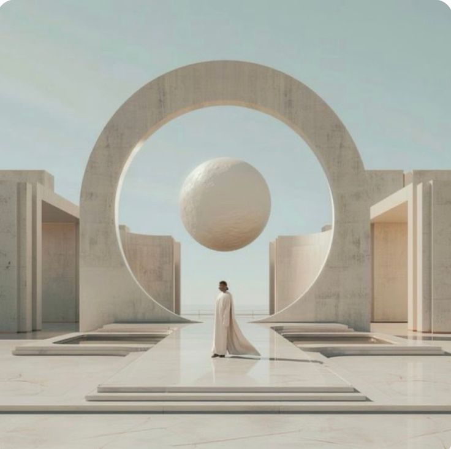

E-Consulting Options
All sessions are 1 hour long. Options marked with 📝 are available as a written report upon request.

Human Design
1-Basic Channels & Gates Reading
2-Advanced Channels & Gates Session (2 sessions)
Uranian Astrology
1-Birth Time Rectification
2-Natal Chart Analysis 📝
3-Relationship Compatibility (Synastry) 📝
4-Solar and Lunar Return Forecasting 📝
5-Career and Financial Astrology 📝
6-Horary Astrology 📝
